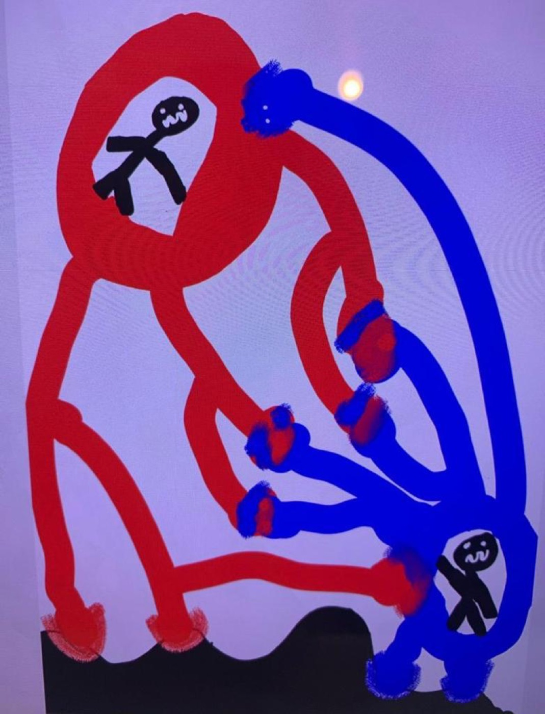
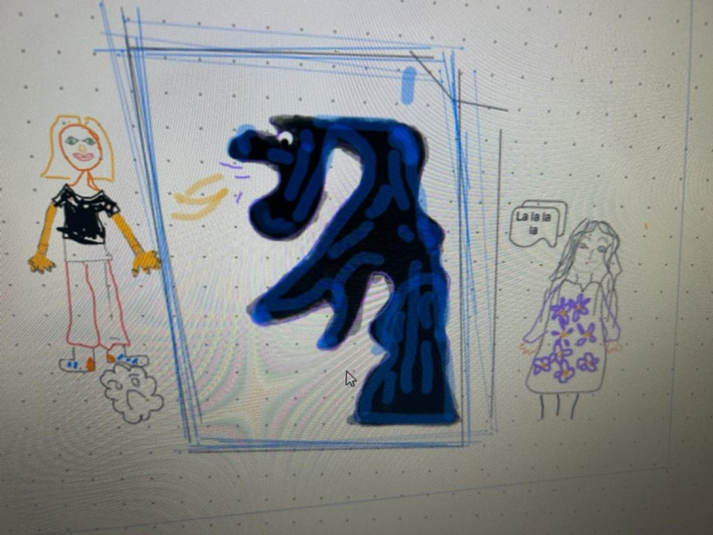
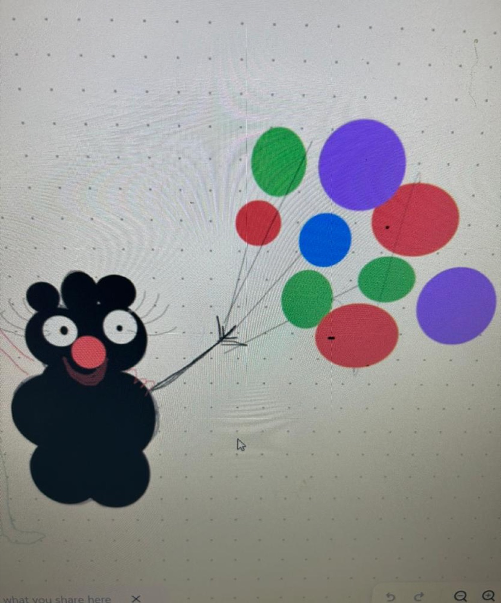
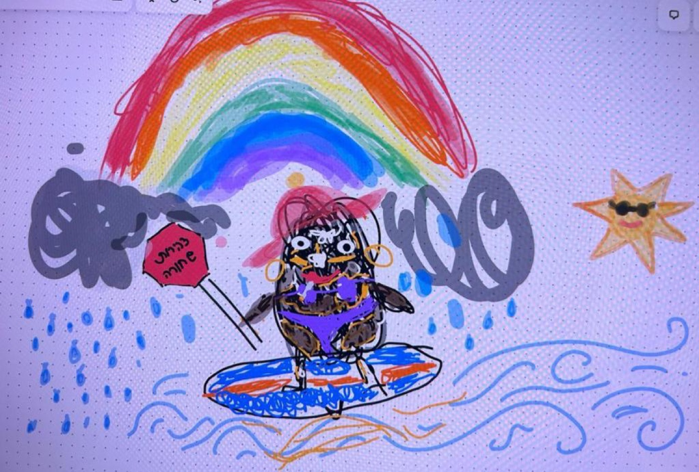
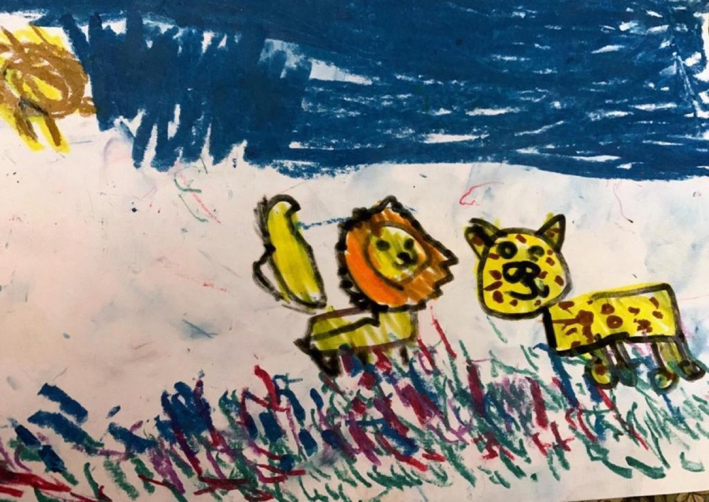
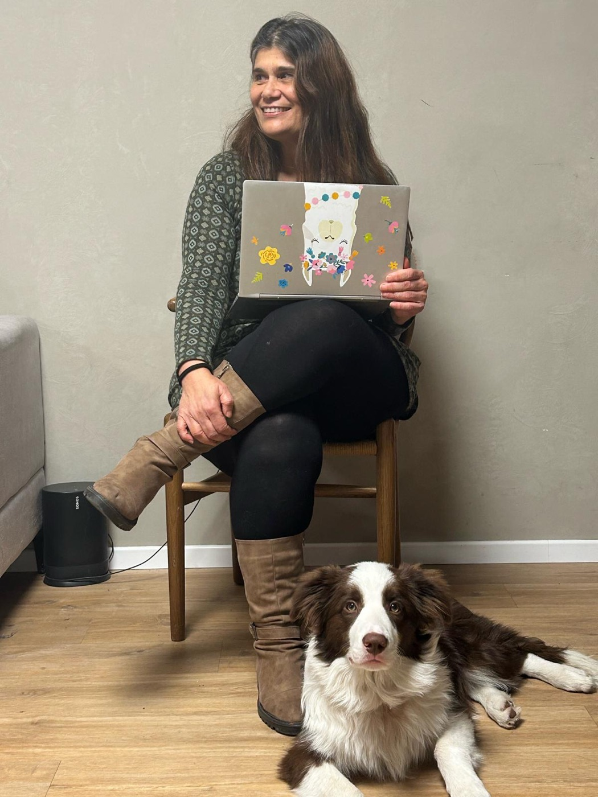

טיפול חם ומעשי לילדים, נוער, מבוגרים והורים — בקליניקה שלי בסידני או אונליין, לאן שהחיים לקחו אתכם.
אני כאן כדי לתת לכם את הידע והכלים שלי — ולראות אתכם ממשיכים הלאה. המטופלים שלי צוחקים שאני "מפטרת" אותם. אם אנחנו מסתובבים במעגלים, אגיד לכם את זה, ונשנה כיוון או נמצא מישהו שמתאים לכם יותר.
״קשיים הם שערים לריפוי. כוחות הריפוי כבר נמצאים בתוכנו.״
מדינה חדשה, שפה חדשה, בית ספר חדש — לכל המשפחה.
חרדה חברתית, דאגנות, פחדים ופאניקה, אצל ילדים ומבוגרים.
צעדים קטנים ומעשיים בחזרה אל עצמכם.
כולל חיילים ומילואימניקים, עם EMDR ו-CBT.
דרך משחק, סיפור ואמנות — עם ההורים לצד.
לפעמים העזרה הטובה ביותר לילד עוברת דרך ההורים.
מעבר יכול להיות מרגש וקשה באותו זמן. הלכתי בדרך הזו בעצמי, ועם משפחות בארבע יבשות. ביחד נבנה תחושת שייכות — איפה שלא תהיו.
אני אקלקטית מתוך בחירה: אני מביאה בשבילכם את השילוב הנכון של שיטות מבוססות מחקר, וגם כמה יצירתיות שמעט מטפלים מחזיקים.
עם הרקע שלי בטיפול באמנות, ציור וסיפור הם לא פעם המקום שבו השיחה האמיתית מתחילה — לילד בן שלוש ולחייל כאחד.






פסיכותרפיסטית מוסמכת ב-CBT, בעלת תואר שני בטיפול באמנויות, ואמא לשלושה. כבר יותר מעשרים שנה אני עובדת עם ילדים, נוער, מבוגרים והורים — בבתי ספר, קליניקות, רשויות ואונליין, בישראל ובאוסטרליה.
אני מאמינה בחיבור: בין אנשים, בין תרבויות, ובינכם לבין העזרה שאתם באמת צריכים. טיפול, בשבילי, הוא קודם כל מפגש אנושי — מקום להגיע אליו כמו שאתם.
לא צריך עדיין את המילים הנכונות. כתבו שורה, ואחזור אליכם אישית.
וואטסאפ: +972 52-542-4127